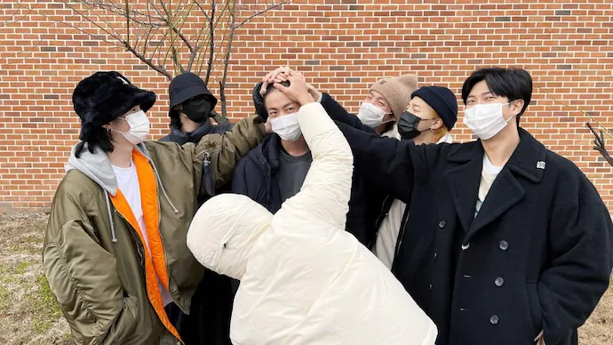

THE MILITARY ENLISTMENT OF BTS MEMBERS
Jin started his 18 months of military service on December 13, 2022, at the front-line South Korean boot camp. He was recently promoted to Private First Class.
After him, it will be J-Hope who will fulfil his army duties as revealed last month. J-Hope began the enlistment process for mandatory military service in February, he said. BigHit Music, BTS' agency said that the rapper applied to end the postponement of his own enlistment.
In a statement, BigHit Music said, “This is BIGHIT MUSIC. We would like to inform our fans that J-hope has initiated the military enlistment process by applying for the termination of his enlistment postponement. We will inform you of further updates in due course. We ask you for your continued love and support for J-hope until he completes his military service and safely returns. Our company will spare no effort in providing support for our artist. Thank you.”
Following his debut solo tour earlier this year, Suga, the K-pop superstar rapper/singer/songwriter, has become the third member of BTS to begin South Korea’s compulsory military service.
“We would like to inform our fans that SUGA has initiated the military enlistment process by applying for the termination of his enlistment postponement,” Big Hit Music said in a statement.
BTS consists of RM, Jin, Suga, J-Hope, Jimin, V, and Jungkook. Other members of the group will soon join the military too, following their own timeline. They announced a break from group musical activities in June last year to focus on their solo careers. The seven-member group is estimated to be back sometime around 2025.